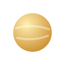
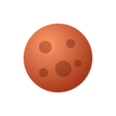
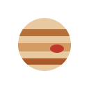

NEXUS-COSMOS
NEXUS-COSMOS
NEXUS-COSMOS
NEXUS-COSMOS
✨ Un día en Venus dura más que su año: rota muy lento sobre su eje.
✨ Marte luce rojo por el óxido de hierro que cubre su superficie.
✨ La Gran Mancha Roja de Júpiter es una tormenta más grande que la Tierra.
✨ Saturno es tan poco denso que flotaría en agua, si existiera una bañera lo bastante grande.
✨ Las huellas de los astronautas en la Luna pueden durar millones de años porque no hay viento.
✨ La Luna se aleja de la Tierra unos 3.8 centímetros cada año.
✨ La luz del Sol tarda unos 8 minutos en llegar a la Tierra.
✨ El Sol contiene más del 99 % de toda la masa del Sistema Solar.
✨ En el espacio no hay aire, por eso el sonido no se propaga.
✨ Un año luz es la distancia que recorre la luz en un año: casi 9.46 billones de kilómetros.
✨ La Estación Espacial Internacional da una vuelta a la Tierra cada 90 minutos aproximadamente.
✨ El rover Perseverance llegó a Marte en febrero de 2021 junto con el helicóptero Ingenuity.
| Categoría | Datos curiosos y adicionales | ||
|---|---|---|---|
| Nombre | Información | Imagen | |
| Planetas | Día en Venus | Un día en Venus dura más que su año: rota muy lento sobre su eje. |  |
| Marte rojo | Marte luce rojo por el óxido de hierro que cubre su superficie. |  | |
| Júpiter | La Gran Mancha Roja de Júpiter es una tormenta más grande que la Tierra. |  | |
| Saturno flota | Saturno es tan poco denso que flotaría en agua, si existiera una bañera lo bastante grande. |  | |
| Luna | Huellas lunares | Las huellas de los astronautas en la Luna pueden durar millones de años porque no hay viento. |  |
| La Luna se aleja | La Luna se aleja de la Tierra unos 3.8 centímetros cada año. |  | |
| Estrellas | Luz del Sol | La luz del Sol tarda unos 8 minutos en llegar a la Tierra. |  |
| Masa del Sol | El Sol contiene más del 99 % de toda la masa del Sistema Solar. | | |
| Espacio | Silencio espacial | En el espacio no hay aire, por eso el sonido no se propaga. |  |
| Año luz | Un año luz es la distancia que recorre la luz en un año: casi 9.46 billones de kilómetros. | ||
| Misiones | Estación Espacial | La Estación Espacial Internacional da una vuelta a la Tierra cada 90 minutos aproximadamente. |  |
| Perseverance e Ingenuity | El rover Perseverance llegó a Marte en febrero de 2021 junto con el helicóptero Ingenuity. | ||
| Nexus-Cosmos · 12 datos en 5 categorías | |||